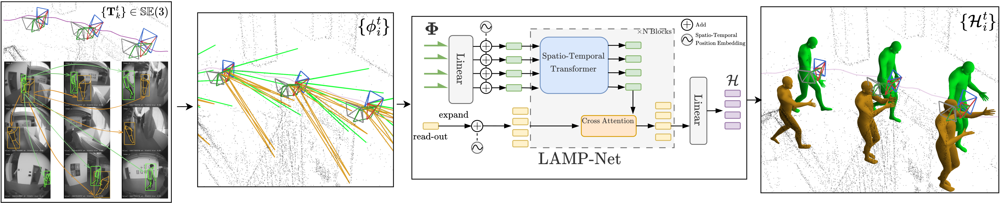

Tracking 3D human motion from egocentric multi-camera headset is challenged by severe egomotion, partial visibility or occlusions and lack of training data. Existing methods designed for monocular video often require static or slowly-moving cameras and cannot efficiently leverage multi-view, calibrated and localized input. This makes them brittle and prone to fail on dynamic egocentric captures. We propose LAMP (Localization Aware Multi-camera People Tracking): a novel, simple framework to solve this via early disentanglement of observer and target motion. LAMP introduces a two-step process. First, we leverage the known device 6 DoF motion and calibration to convert detected 2D body keypoints from all cameras over a temporal window into a unified 3D world reference frame. Second, an end-to-end trained spatio-temporal transformer fits 3D human motion directly to this 3D ray cloud. This "lift-then-fit" approach allows LAMP to learn and leverage a natural human motion prior in the world-space, as well as providing an elegant framework to flexibly incorporate information from multiple temporally asynchronous, partially observing and moving cameras. LAMP achieves state-of-the-art results on monocular benchmarks, while significantly outperforming baselines for our targeted egocentric setting.

LAMP employs an early world-space ray lifting paradigm to track multiple people over time from a multi-camera headset. Starting from individual images, the method detects 2D bounding boxes and keypoints per person, associates them across cameras and time, then back-projects the 2D keypoints into posed 3D rays using the known camera calibration and 6-DoF device poses. The resulting spatio-temporal ray cloud is processed by LAMP-Net, a spatio-temporal transformer that outputs SMPL body motion parameters for each tracked person at each timestamp.
@inproceedings{yang2026lamp,
title = {{LAMP}: Localization Aware Multi-camera People Tracking in Metric {3D} World},
author = {Yang, Nan and Straub, Julian and Zhang, Fan and Newcombe, Richard and Engel, Jakob and Ma, Lingni},
booktitle = {Proceedings of the IEEE/CVF Conference on Computer Vision and Pattern Recognition (CVPR)},
year = {2026}
}